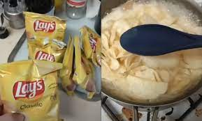

World's Famous Mashy P's Recipe

Description
This is the world famous mashy'p recipe by Head Shef. This recipe is so scrumptious that
it's made it's way into the famous recipe book of TikTok and we now that TikTok is where
famous shef go to shef school. Make this recipe and everyone at the pot luck will love you.
Skip the KFC drive through and make this instead!
Ingredients
- Your choice of lay's(I like using Hot dill pickle)
- Milk (preferrably expired)
- Butter churned by my pet rat
- Chives from Jack & the bean stalk
Steps
- Mash the chips and add butter to the mix
- Next add the milk and stir until good
- Add chives on top, serve & enjoy!